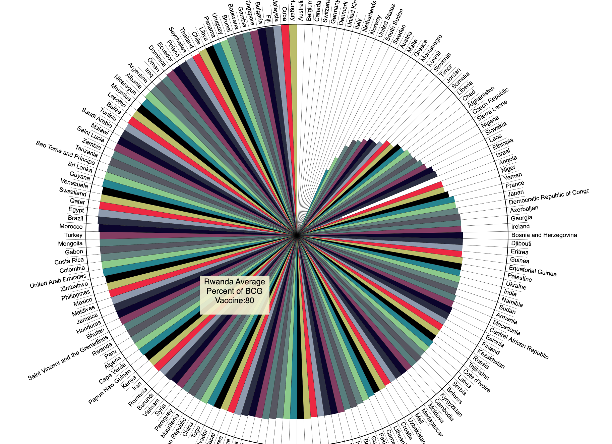

(Home)


| BCG Vaccine and COVID-19 Immunity (Home) |
|

|
|
In the age of COVID-19, scientists have been studying existing factors that may or may not contribute its spread
and effects.The BCG (bacille Calmette-Guerin) vaccine protects against tuberculosis around the world. This vaccine is mostly used
in countries where tuberculosis is common but is not prevalent where there is a low incidence of this disease.
This web site contributes to the analysis of the BCG vaccine as it pertains to possible COVID-19 immunity. Three
visualizations are provided, a circular graph showing average BCG use since 1980, a line graph for each country for the years since
1980, and a scatterplot comparing the BCG vaccine to COVID-19 cases and deaths by country.